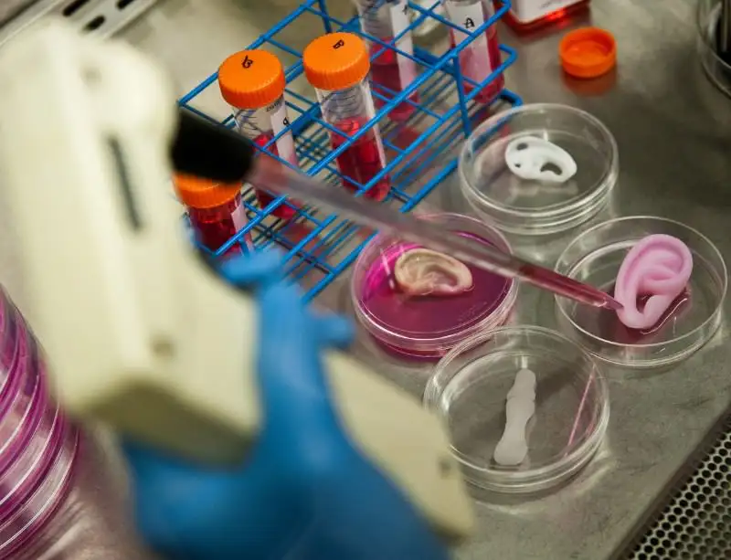
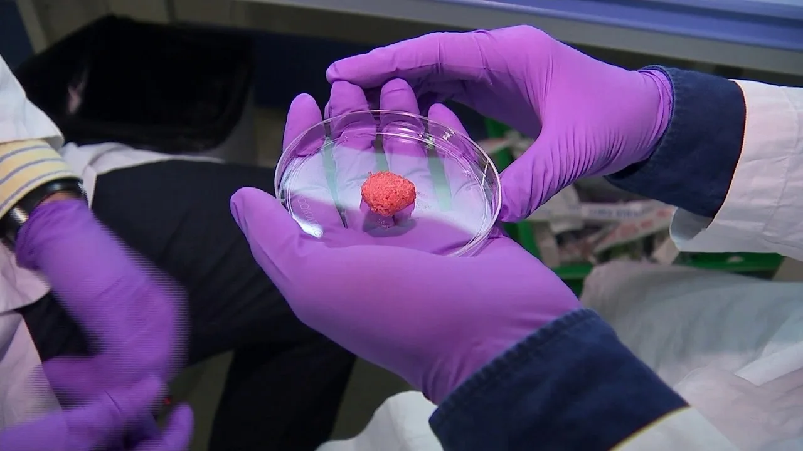
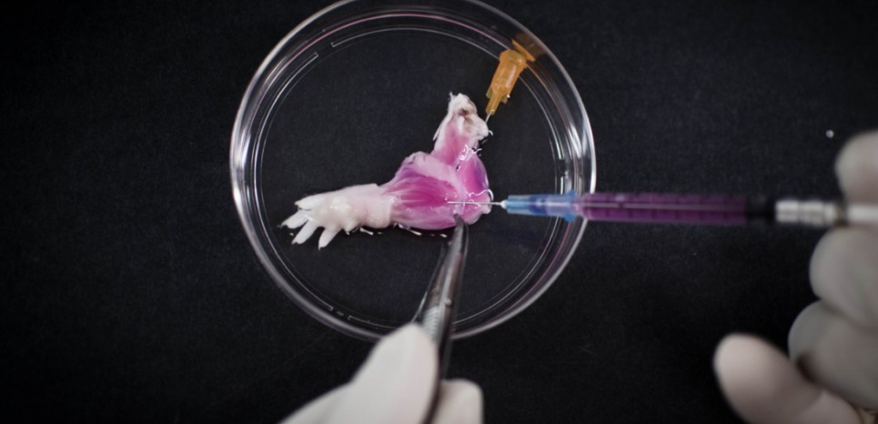

Как выращивают органы вне организма
Биоинженерия тканей — область медицины и биотехнологий, занимающаяся созданием искусственных органов и тканей для трансплантации и медицинских исследований. Основная цель — замена повреждённых органов и стимуляция регенерации при минимальном риске отторжения.
Послойная печать клеток и биополимеров позволяет воспроизводить сложные структуры, включая сосудистые сети.
Из донорского органа удаляют клетки, сохраняя каркас, который затем заселяют клетками пациента.
Мини-органы из стволовых клеток используются для исследований и тестирования лекарств.
Контролируемая среда обеспечивает правильное формирование сложных тканей.
Для создания тканеинженерных конструкций применяются биосовместимые и биоразрушаемые биополимеры, включая гидрогели, имитирующие внеклеточный матрикс.
Органы выращивают за несколько дней.
Процесс может занимать месяцы и требует точного контроля.
Искусственные органы полностью исключают отторжение.
Иммунная совместимость остаётся серьёзной проблемой.
Технологии вызывают споры, связанные с генетической модификацией, доступностью лечения и социальным неравенством.